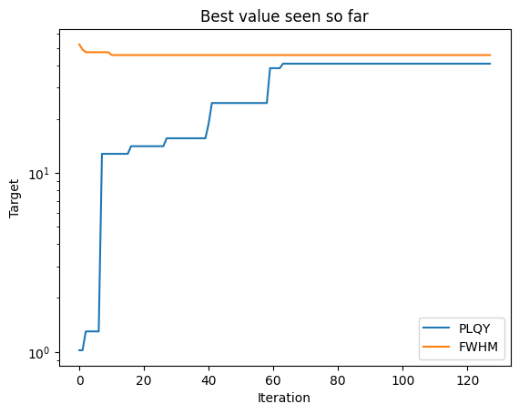
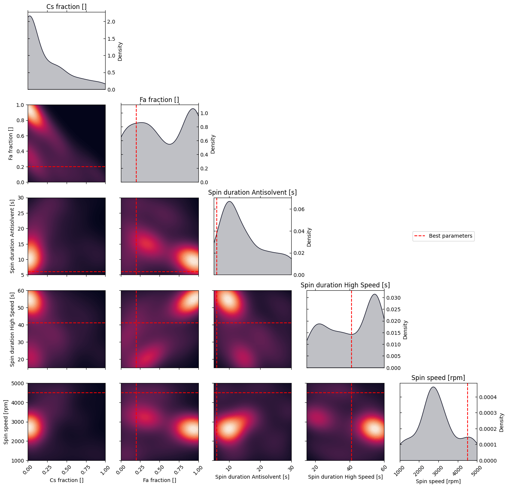

Design of Experiment: perovskite thin film optimization PLQY and FWHM (pymoo)
This notebook is made to use optimPV for experimental design. Here, we show how to load some data from a presampling, and how to use optimPV to suggest the next set of experiment using Bayesian optimization.
The goal here is to do multi-objective optimization (MO) to maximize the photoluminescence quantum yield (PLQY) and minimize the full width at half maximum (FWHM) of a perovskite thin film.
Note: The data used here is real data generated in the i-MEET and HI-ERN labs at the university of Erlangen-Nuremberg (FAU) by Frederik Schmitt. The data is not published yet, and is only used here for demonstration purposes. For more information, please contact us.
[1]:
# Import necessary libraries
import warnings, os, sys
# remove warnings from the output
os.environ["PYTHONWARNINGS"] = "ignore"
warnings.filterwarnings(action='ignore', category=FutureWarning)
warnings.filterwarnings(action='ignore', category=UserWarning)
import pandas as pd
import matplotlib.pyplot as plt
import numpy as np
try:
from optimpv import *
from optimpv.optimizers.pymooOpti.pymooOptimizer import PymooOptimizer
except Exception as e:
sys.path.append('../') # add the path to the optimpv module
from optimpv import *
from optimpv.optimizers.pymooOpti.pymooOptimizer import PymooOptimizer
Get the data
[2]:
# Define the path to the data
data_dir =os.path.join(os.path.abspath('../'),'Data','pero_MOO_opti') # path to the data directory
# Load the data
df = pd.read_csv(os.path.join(data_dir,'Pero_PLQY_FWHM.csv'),sep=r',') # load the data
stepsize_fraction = 0.05
stepsize_spin_speed = 100
# Display some information about the data
print(df.describe())
iteration batch_number Cs_fraction Fa_fraction Ma_fraction \
count 128.000000 128.000000 128.000000 128.000000 128.000000
mean 3.500000 7.500000 0.209375 0.533984 0.256641
std 2.300291 4.627885 0.278052 0.361914 0.277742
min 0.000000 0.000000 0.000000 0.000000 0.000000
25% 1.750000 3.750000 0.000000 0.200000 0.050000
50% 3.500000 7.500000 0.050000 0.500000 0.100000
75% 5.250000 11.250000 0.400000 0.950000 0.462500
max 7.000000 15.000000 1.000000 1.000000 1.000000
Spin_duration_Antisolvent Spin_duration_High_Speed Spin_speed \
count 128.000000 128.000000 128.000000
mean 14.617188 40.531250 2914.843750
std 7.183885 14.651295 1015.400301
min 5.000000 15.000000 1000.000000
25% 10.000000 26.500000 2400.000000
50% 12.000000 43.000000 2700.000000
75% 20.000000 55.000000 3400.000000
max 30.000000 60.000000 5000.000000
FWHM PLQY merit
count 128.000000 128.000000 128.000000
mean 98.012656 7.975000 0.549372
std 82.719007 10.030822 0.148835
min 45.740000 0.000000 0.219360
25% 49.255000 0.000000 0.471784
50% 53.950000 5.480000 0.528186
75% 101.587500 11.952500 0.575939
max 335.900000 40.920000 0.915136
Define the parameters for the simulation
[3]:
params = [] # list of parameters to be optimized
Cs_fraction = FitParam(name = 'Cs_fraction', value = 0, bounds = [0,1], value_type = 'float', display_name='Cs fraction', unit='', axis_type = 'linear')
params.append(Cs_fraction)
Fa_fraction = FitParam(name = 'Fa_fraction', value = 0, bounds = [0,1], value_type = 'float', display_name='Fa fraction', unit='', axis_type = 'linear')
params.append(Fa_fraction)
Spin_duration_Antisolvent = FitParam(name = 'Spin_duration_Antisolvent', value = 10, bounds = [5,30], value_type = 'float', display_name='Spin duration Antisolvent', unit='s', axis_type = 'linear')
params.append(Spin_duration_Antisolvent)
Spin_duration_High_Speed = FitParam(name = 'Spin_duration_High_Speed', value = 20, bounds = [15,60], value_type = 'float', display_name='Spin duration High Speed', unit='s', axis_type = 'linear')
params.append(Spin_duration_High_Speed)
Spin_speed = FitParam(name = 'Spin_speed', value = 1000, bounds = [1000,5000], value_type = 'float', display_name='Spin speed', unit='rpm', axis_type = 'linear')
params.append(Spin_speed)
Run the optimization
[4]:
# Define the Agent and the target metric/loss function
from optimpv.general.SuggestOnlyAgent import SuggestOnlyAgent
threshold = [0.5, 50] # thresholds for the metrics
suggest = SuggestOnlyAgent(params,exp_format=['PLQY', 'FWHM'],minimize=[False,True],name=None,threshold=threshold)
[5]:
# Define the optimizer
parameter_constraints =[f'Cs_fraction + Fa_fraction <= 1']
optimizer = PymooOptimizer(params=params, agents=suggest, algorithm='NSGA2', pop_size=6, n_gen=1, name='pymoo_single_obj', verbose_logging=True,max_parallelism=20,existing_data=df, suggest_only=True, parameter_constraints=parameter_constraints)
[6]:
to_run_next = optimizer.optimize() # run the optimization with pymoo
[INFO 01-20 10:23:36] optimpv.pymooOptimizer: Starting optimization using NSGA2 algorithm
[INFO 01-20 10:23:36] optimpv.pymooOptimizer: Population size: 6, Generations: 1
[INFO 01-20 10:23:36] optimpv.pymooOptimizer: Using existing population of size 128
[INFO 01-20 10:23:36] optimpv.pymooOptimizer: Suggesting new points without running agents
[INFO 01-20 10:23:36] optimpv.pymooOptimizer: Attempt 2: Found 5 valid candidates out of 6 requested
[INFO 01-20 10:23:36] optimpv.pymooOptimizer: Attempt 3: Found 6 valid candidates out of 6 requested
[7]:
# get the best parameters and update the params list in the optimizer and the agent
optimizer.update_params_with_best_balance() # update the params list in the optimizer with the best parameters
suggest.params = optimizer.params # update the params list in the agent with the best parameters
print("Best parameters found:")
for p in optimizer.params:
print(f"{p.name}: {p.value} {p.unit} ")
Best parameters found:
Cs_fraction: 0.0
Fa_fraction: 0.2
Spin_duration_Antisolvent: 6.0 s
Spin_duration_High_Speed: 41.0 s
Spin_speed: 4500.0 rpm
[8]:
# Plot optimization results
data = optimizer.get_df_from_pymoo()
data = optimizer.rescale_dataframe(data, params)
all_metrics = optimizer.all_metrics
plt.figure()
for i, metric in enumerate(all_metrics):
if suggest.minimize[i]:
plt.plot(np.minimum.accumulate(data[metric]), label=metric)
else:
plt.plot(np.maximum.accumulate(data[metric]), label=metric)
plt.yscale("log")
plt.xlabel("Iteration")
plt.ylabel("Target")
plt.legend()
plt.title("Best value seen so far")
plt.show()

[9]:
# print the parameters to that are running in data
print("Parameters to run next:")
print(to_run_next)
Parameters to run next:
Cs_fraction Fa_fraction Spin_duration_Antisolvent \
0 0.416667 0.581196 25.045924
1 0.202270 0.645164 29.429907
2 0.513405 0.026391 7.333619
3 0.338730 0.011037 10.761647
4 0.078995 0.774708 17.743361
5 0.115885 0.459397 28.118912
Spin_duration_High_Speed Spin_speed
0 38.806388 1074.957957
1 23.239018 1746.335826
2 42.246583 4248.038384
3 56.328715 2814.421275
4 32.257086 3613.080083
5 36.025991 2997.485987
[10]:
# Plot the density of the exploration of the parameters
# this gives a nice visualization of where the optimizer focused its exploration and may show some correlation between the parameters
plot_dens = True
if plot_dens:
from optimpv.posterior.exploration_density import *
params_orig_dict, best_parameters = {}, {}
for p in optimizer.params:
best_parameters[p.name] = p.value
fig_dens, ax_dens = plot_density_exploration(params, optimizer = optimizer, best_parameters = best_parameters, optimizer_type = 'pymoo')
